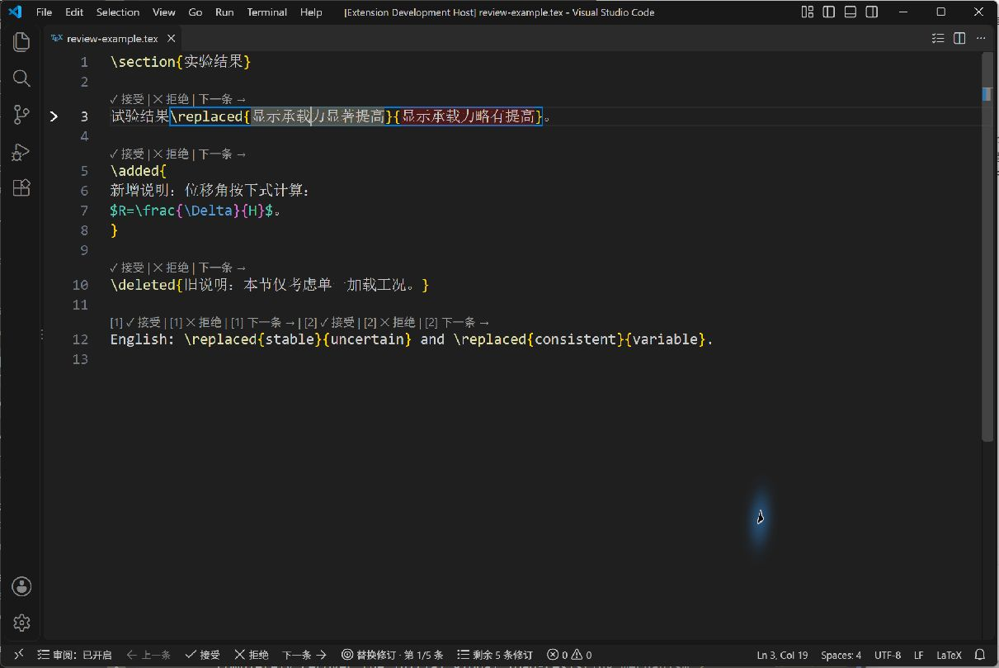
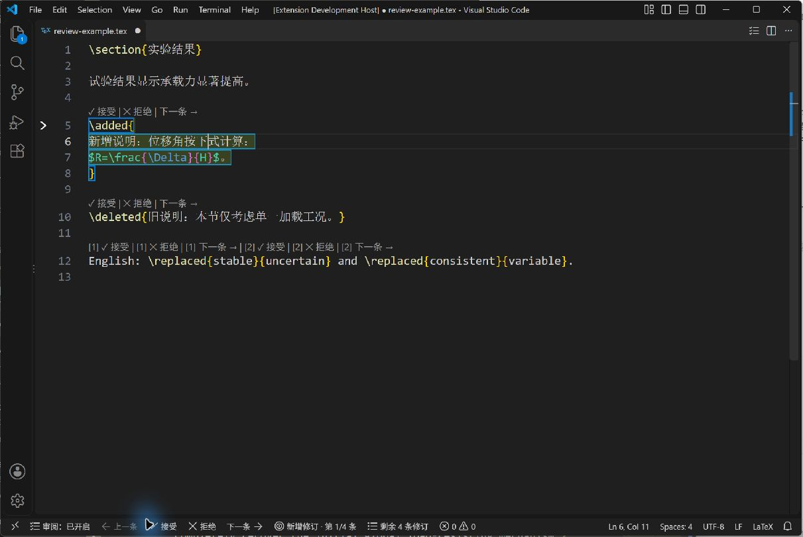

LaTeX Change Reviewer
已上架 VS Code 扩展市场，发布者：Unfinished draft。
中文
在 VS Code 里逐条审阅 LaTeX 修改
LaTeX Change Reviewer 是一个 VS Code 插件，帮你在 .tex 源码中逐条检查新增、删除和替换。对照新旧文本后，点击接受或拒绝，决定会直接写入编辑器；默认随后定位到下一条。点错可用 Ctrl+Z 撤销。
插件提供清晰的当前修订标记、编辑器内按钮和固定操作条，也可用命令面板、右键菜单或辅助快捷键审阅。支持简体中文、English、日本語界面。
同一条源码行有多处修订时，按钮会用 [1]、[2] 等编号区分各自的目标，按该行中出现的顺序排列。点击 [1] 接受 处理第一处，点击 [2] 拒绝 处理第二处；各组“下一条”从对应修订向后导航。自动折行仍算同一条源码行。编号是界面提示，不写入文稿，处理修订后会重新排列。

使用步骤
- 在 VS Code 扩展面板搜索 LaTeX Change Reviewer，选择发布者 Unfinished draft，点击安装。
- 在 VS Code 中打开
.tex 文件，点击编辑器标题栏的清单图标开启审阅。
- 查看新旧文本，点击接受或拒绝；也可导航到上一条或下一条。
- 修改会留在编辑器中，由你决定何时保存。关闭审阅可再次点击清单图标。

行为与支持范围
- 识别 changes 风格的
\added{新增}、\deleted{旧文} 和 \replaced{新文}{旧文}；替换命令按新文本在前、旧文本在后的顺序处理。
- 接受替换保留新文，拒绝替换恢复旧文；接受新增保留内容，拒绝新增移除内容；接受删除移除旧文，拒绝删除恢复旧文。
- 每次只审阅当前文件中的一条修订。嵌套修订先处理外层，保留的内层之后继续审阅；到末尾停止，不循环。
- 保留参数内原有字符、空格和换行；不自动排版或保存。工作区可记住审阅开关状态。
- 面向 Windows 桌面版 VS Code 1.85.2 或更高版本。首轮已在 Windows 桌面 VS Code 验证；其他系统、Web 和 Remote 环境尚未验证。
- 适合标准 changes 宏写法。自定义宏、复杂 TeX 条件和特殊宏展开不在支持范围；只读文件不能接受或拒绝。插件不扫描整个项目、不提供批量处理或 PDF 对照。
插件免费使用，采用 MIT 许可。源码和问题反馈见 GitHub。可从 VS Code 扩展市场 直接安装。离线安装请选择 GitHub Releases 中带 -marketplace.vsix 的正式安装包。
English
Review LaTeX edits one at a time in VS Code. Compare the old and new text, then click Accept or Reject. Each decision updates the open source file and moves to the next change by default. Use Ctrl+Z to undo. Install directly in VS Code: search LaTeX Change Reviewer in Extensions and choose publisher Unfinished draft. Supports standard \added, \deleted, and \replaced{new}{old} changes commands. Available now on the VS Code Marketplace. Windows desktop support has been verified; Web, Remote, and other operating systems have not.
日本語
VS Code で LaTeX の変更を一件ずつ確認できます。新旧の文章を見比べて承認または却下をクリックすると、開いているソースが更新され、既定では次の変更へ移動します。Ctrl+Z で元に戻せます。VS Code の拡張機能で LaTeX Change Reviewer を検索し、発行者 Unfinished draft を選んでインストールしてください。標準的な \added、\deleted、\replaced{新しい文}{元の文} に対応します。VS Code Marketplace で公開されています。Windows デスクトップ版で動作確認済みです。Web、Remote、その他の OS は未検証です。